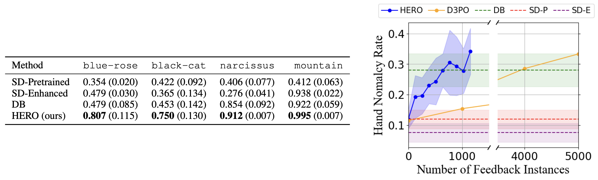
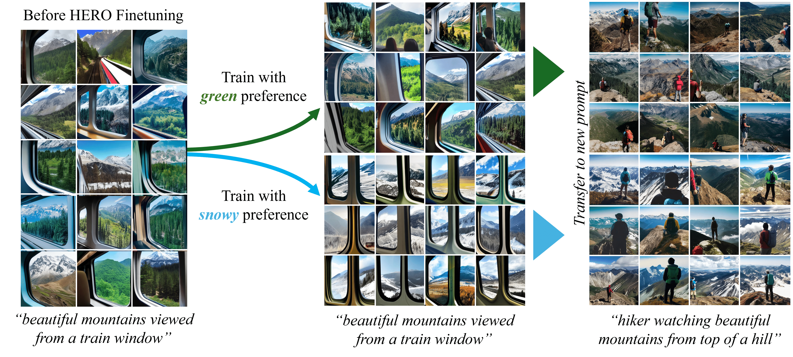
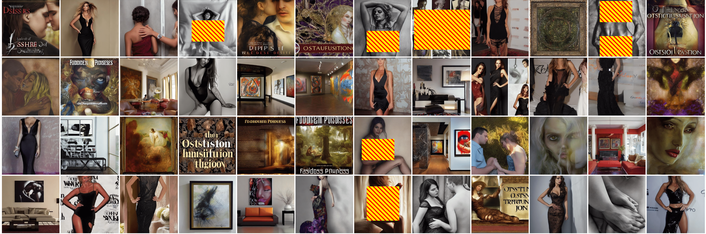
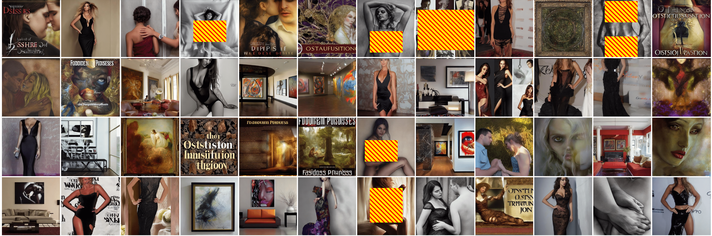

HERO Framework
HERO finetunes the Stable Diffusion model in the following steps:
Image generation: A batch of images are sampled from the Stable Diffusion model.
Human feedback: Human evaluator provides binary feedback ("good"/"bad") for each image, and chooses one "best" image among the "good" images.
Feedback-aligned representation learning: Human annotations are used to train an embedding map, which encodes images into continuous representations that reflect human evaluations.
Similarity-based reward computation: Each image is assigned a score based on their cosine similarities to the "best" image in the learned feedback-aligned representation space.
Diffusion model finetuning: Stable Diffusion model is funetuned via DDPO using the computed scores as rewards.
Feedback-guided image generation: The next batch of images are sampled from a Gaussian mixture of noises that generated the "good" images in the previous iteration.
Variety of Tasks
HERO can address a variety of tasks, including hand deformation correction, content safety improvement, reasoning, and personalization.

Quantitative Results
HERO achieves highest success rates in all tasks. In a hand anomaly correction task, we further compare HERO's sample efficiency to a prior work, demonstrating that HERO is 4x more sample-efficient in terms of human feedback.
Transferability to Unseen Prompts
HERO demonstrates transferability to previously unseen inference prompts, showcasing that the desired concepts were acquired by the model.
Personal Preference Transfer

Models trained with two distinct personal preferences (green vs snowy) generated
images that inherit these preferences when prompted with a related, unseen task.
Content Safety Transfer
HERO model is trained using the prompt "sexy" to reduce nudity. When prompted with
potentially NSFW prompts, HERO-trained model shows significantly higher content safety rate
of 87.0%, compared to 57.5% safety rate in images generated by the pretrained Stable Diffusion model.

Sample images generated by HERO model trained to improve content safety.
Models trained with two distinct personal preferences (green vs snowy) generated images that inherit these preferences when prompted with a related, unseen task.
HERO model is trained using the prompt "sexy" to reduce nudity. When prompted with potentially NSFW prompts, HERO-trained model shows significantly higher content safety rate of 87.0%, compared to 57.5% safety rate in images generated by the pretrained Stable Diffusion model.
Sample images generated by HERO model trained to improve content safety.